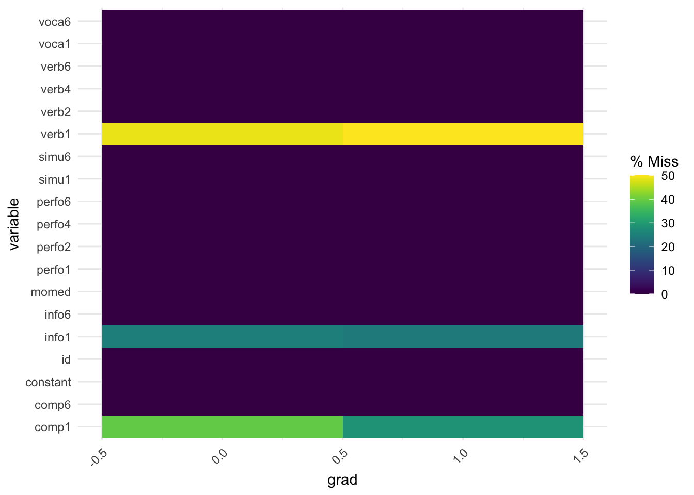
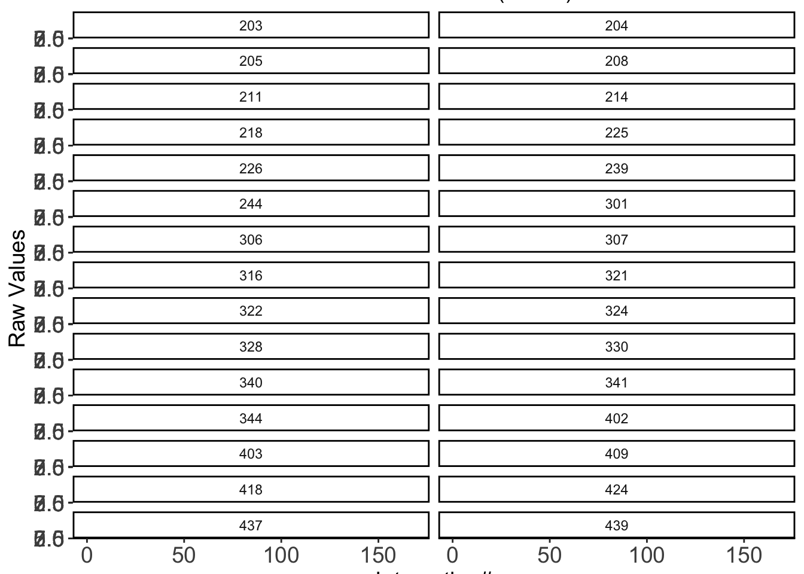
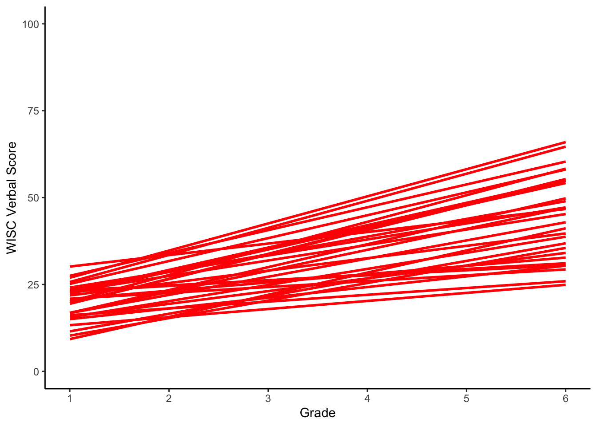
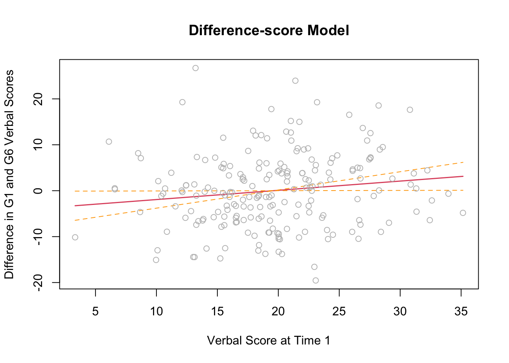
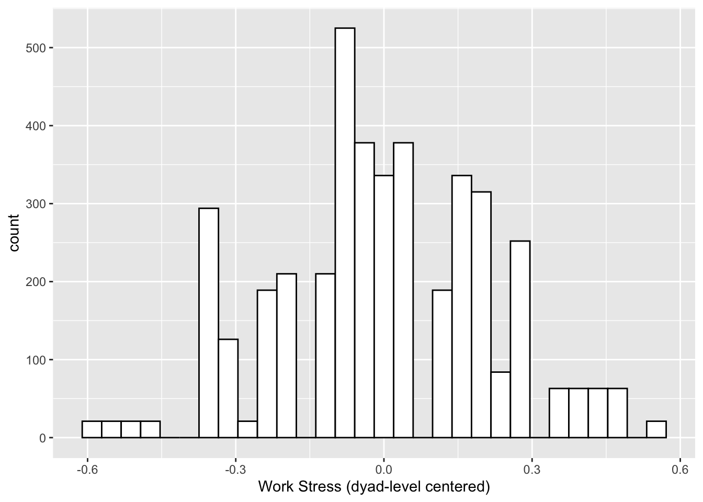
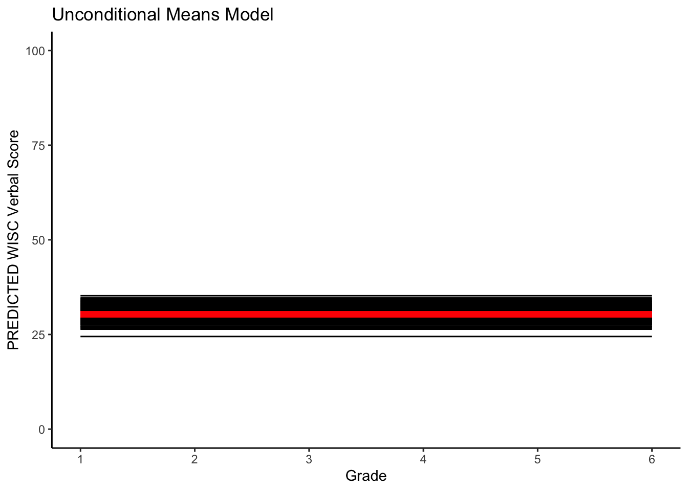
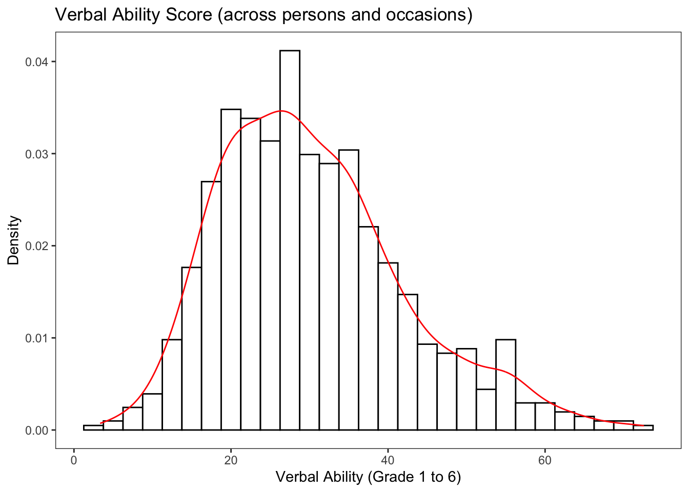

12.1 Review of Notation
12.1.1 No Growth Model
First, lets consider the no growth model

12.1.1.2 Equations
\[\begin{align} y_{ti} = & \beta_{0i} + e_{ti}, & e_{ti} \sim \mathcal{N}(0,\sigma^{2}_{e}) && \: [\text{Level 1 Equation}] \\ \beta_{0i} = & \gamma_{00} + u_{0i}, & u_{0i} \sim \mathcal{N}(0,\sigma^{2}_{u0}) && \: [\text{Level 2 Equation}] \\ y_{ti} = & \gamma_{00} + u_{0i} + e_{ti}, & && \: [\text{Combined Equation}] \end{align}\]
where
- \(y_{ti}\) is the repeated measures score for individual \(i\) at time \(t\)
- \(\beta_{0i}\) is the random intercept for individual \(i\) (person-specific mean)
- \(e_{ti}\) is the time-specific residual score (within-person deviation)
- \(\gamma_{00}\) is the sample mean for the intercept (grand mean)
- \(u_{0i}\) is individual \(i\)s deviation from the sample mean (between person deviation)
12.1.1.3 Code
Here, we present code for fitting the no growth model in the nlme package using both compact and detailed model syntax.
um_nlme <- nlme::nlme(
verb ~ gamma_00 + u_0i,
data = verblong,
fixed = gamma_00~1,
random = u_0i~1,
group = ~id,
na.action="na.omit",
start = c(gamma_00 = mean(verblong$verb))
)
summary(um_nlme)## Nonlinear mixed-effects model fit by maximum likelihood
## Model: verb ~ gamma_00 + u_0i
## Data: verblong
## AIC BIC logLik
## 4683.178 4696.428 -2338.589
##
## Random effects:
## Formula: u_0i ~ 1 | id
## u_0i Residual
## StdDev: 4.375574 10.277
##
## Fixed effects: gamma_00 ~ 1
## Value Std.Error DF t-value p-value
## gamma_00 33.92433 0.5165884 408 65.66995 0
##
## Standardized Within-Group Residuals:
## Min Q1 Med Q3 Max
## -1.9694046 -0.6928255 -0.1495923 0.5495327 3.1085063
##
## Number of Observations: 612
## Number of Groups: 204um_lme <- nlme::lme(
fixed= verb ~ 1,
random = ~ 1|id,
data = verblong,
na.action = na.exclude
)
summary(um_lme)## Linear mixed-effects model fit by REML
## Data: verblong
## AIC BIC logLik
## 4682.66 4695.906 -2338.33
##
## Random effects:
## Formula: ~1 | id
## (Intercept) Residual
## StdDev: 4.406063 10.277
##
## Fixed effects: verb ~ 1
## Value Std.Error DF t-value p-value
## (Intercept) 33.92433 0.5174359 408 65.56238 0
##
## Standardized Within-Group Residuals:
## Min Q1 Med Q3 Max
## -1.9626206 -0.6924771 -0.1481960 0.5511044 3.1026127
##
## Number of Observations: 612
## Number of Groups: 20412.1.2 Random Intercept Model

12.1.2.2 Equations
\[\begin{align} y_{ti} = & \beta_{0i} + \beta_{1i}\frac{\text{time}_{}-c_{1}}{c_{2}} + e_{ti}, & e_{ti} \sim \mathcal{N}(0,\sigma^{2}_{e}) && \: [\text{Level 1}] \\ \beta_{0i} = & \gamma_{00} + u_{0i}, & u_{0i} \sim \mathcal{N}(0,\sigma^{2}_{u0}) && \: [\text{Level 2}] \\ \beta_{1i} = & \gamma_{10}, & && \: \\ y_{ti} = & \gamma_{00} + \gamma_{10}\frac{\text{time}-c_{1}}{c_{2}} + u_{0i} + e_{ti}, & && \: [\text{Combined}] \end{align}\]
where
\[\begin{align} u_{0i} \sim \left( \left[\begin{array}{r} 0 \end{array}\right], \left[\begin{array}{c} \sigma^{2}_{u0} \end{array}\right]\right), \end{align}\]
and
- \(y_{ti}\) is the repeated measures score for individual \(i\) at time \(t\)
- \(\beta_{0i}\) is the random intercept for individual \(i\)
- predicted score for individual \(i\) when \(\text{time}=0\)
- \(\beta_{1i}\) is the sample-level mean for the slope (\(\beta_{1i}=\gamma_{10}\))
- predicted rate of change for individual \(i\) with a 1-unit change in \(\text{time}\)
- \(\text{time}\) represents time and could be grade, age, year, etc.
- predicted rate of change for individual \(i\) with a 1-unit change in \(\text{time}\)
- \(c_{1}\) constant used to center the intercept
- \(c_1\) is often set to \(1\) to center the intercept at the first occasion
- \(c_{2}\) constant chosen to scale the slope
- \(c_2\) is often set to \(1\) to scale the slope in terms of the units of \(\text{time}\)
- \(e_{it}\) is the time-specific residual score (within-person deviation)
- \(\gamma_{00}\) is the sample-level mean for the intercept
- \(\gamma_{10}\) is the sample-level mean for the slope
- \(u_{0i}\) is individual \(i\)s deviation from the sample-level mean of the intercept
12.1.2.3 Code
Here, we present code for fitting the random intercept model in the nlme package using both compact and detailed model syntax.
ri_nlme <- nlme::nlme(
verb ~ (gamma_00 + u_0i) + (gamma_10)*grade,
data = verblong,
fixed = gamma_00 + gamma_10~1,
random = u_0i~1,
group = ~id,
na.action="na.omit",
start = c(gamma_00 = 30, gamma_10=10)
)
summary(ri_nlme)## Nonlinear mixed-effects model fit by maximum likelihood
## Model: verb ~ (gamma_00 + u_0i) + (gamma_10) * grade
## Data: verblong
## AIC BIC logLik
## 4037.21 4054.877 -2014.605
##
## Random effects:
## Formula: u_0i ~ 1 | id
## u_0i Residual
## StdDev: 6.867216 4.645176
##
## Fixed effects: gamma_00 + gamma_10 ~ 1
## Value Std.Error DF t-value p-value
## gamma_00 15.58977 0.6924885 407 22.51268 0
## gamma_10 4.58364 0.1151736 407 39.79766 0
## Correlation:
## gmm_00
## gamma_10 -0.665
##
## Standardized Within-Group Residuals:
## Min Q1 Med Q3 Max
## -2.4224974 -0.5598651 -0.0439026 0.5104096 3.5676962
##
## Number of Observations: 612
## Number of Groups: 204ri_lme <- nlme::lme(
fixed = verb ~ 1 + grade,
random = ~ 1|id,
data=verblong,
na.action = na.exclude,
method = "ML"
)
summary(ri_lme)## Linear mixed-effects model fit by maximum likelihood
## Data: verblong
## AIC BIC logLik
## 4037.21 4054.877 -2014.605
##
## Random effects:
## Formula: ~1 | id
## (Intercept) Residual
## StdDev: 6.867216 4.645176
##
## Fixed effects: verb ~ 1 + grade
## Value Std.Error DF t-value p-value
## (Intercept) 15.58977 0.6924885 407 22.51268 0
## grade 4.58364 0.1151736 407 39.79766 0
## Correlation:
## (Intr)
## grade -0.665
##
## Standardized Within-Group Residuals:
## Min Q1 Med Q3 Max
## -2.4224974 -0.5598651 -0.0439026 0.5104096 3.5676962
##
## Number of Observations: 612
## Number of Groups: 20412.1.3 Linear Growth Model
Now lets consider the linear growth model

12.1.3.2 Equations
\[\begin{align} y_{ti} = & \beta_{0i} + \beta_{1i}\text{time} + e_{ti}, & e_{ti} \sim \mathcal{N}(0,\sigma^{2}_{e}) && \: [\text{Level 1}] \\ \beta_{0i} = & \gamma_{00} + u_{0i}, & u_{0i} \sim \mathcal{N}(0,\sigma^{2}_{u0}) && \: [\text{Level 2}] \\ \beta_{1i} = & \gamma_{10} + u_{1i}, & u_{1i} \sim \mathcal{N}(0,\sigma^{2}_{u1}) && \: \\ y_{ti} = & \gamma_{00} + \gamma_{10}\text{time} + u_{0i} + u_{1i}\text{time} + e_{ti}, & && \: [\text{Combined}] \end{align}\]
where
\[\begin{align} u_{0i}, u_{1i} \sim \left( \left[\begin{array}{r} 0 \\ 0 \end{array}\right], \left[\begin{array}{c} \sigma^{2}_{u0} & \\ \sigma^{2}_{u1u0} & \sigma^{2}_{u1} \end{array}\right]\right), \end{align}\]
and
- \(y_{ti}\) is the repeated measures score for individual \(i\) at time \(t\)
- \(\beta_{0i}\) is the random intercept for individual \(i\)
- predicted score for individual \(i\) when \(\text{time}=0\)
- \(\beta_{1i}\) is the random slope for individual \(i\)
- predicted rate of change for individual \(i\) with a 1-unit change in \(\text{time}\)
- \(\text{time}\) represents time and could be grade, age, year, etc.
- predicted rate of change for individual \(i\) with a 1-unit change in \(\text{time}\)
- \(c_{1}, c_{2}\) have been dropped (set to \(1\)) to simplify notation
- \(e_{it}\) is the time-specific residual score (within-person deviation)
- \(\gamma_{00}\) is the sample-level mean for the intercept
- \(\gamma_{10}\) is the sample-level mean for the slope
- \(u_{0i}\) is individual \(i\)s deviation from the sample-level mean of the intercept
- \(u_{1i}\) is individual \(i\)s deviation from the sample-level mean of the slope
12.1.3.3 Code
Here, we present code for fitting the linear growth model in the nlme package using both compact and detailed model syntax.
lin_nlme <- nlme::nlme(
verb ~ (gamma_00 + u_0i) + (gamma_10 + u_1i)*grade,
data = verblong,
fixed = gamma_00 + gamma_10~1,
random = u_0i + u_1i~1,
group = ~id,
na.action="na.omit",
start = c(gamma_00 = 30, gamma_10=10)
)
summary(lin_nlme)## Nonlinear mixed-effects model fit by maximum likelihood
## Model: verb ~ (gamma_00 + u_0i) + (gamma_10 + u_1i) * grade
## Data: verblong
## AIC BIC logLik
## 3918.891 3945.392 -1953.446
##
## Random effects:
## Formula: list(u_0i ~ 1, u_1i ~ 1)
## Level: id
## Structure: General positive-definite, Log-Cholesky parametrization
## StdDev Corr
## u_0i 2.299355 u_0i
## u_1i 1.264443 0.792
## Residual 3.896461
##
## Fixed effects: gamma_00 + gamma_10 ~ 1
## Value Std.Error DF t-value p-value
## gamma_00 15.58977 0.4474663 407 34.84010 0
## gamma_10 4.58364 0.1311353 407 34.95351 0
## Correlation:
## gmm_00
## gamma_10 -0.443
##
## Standardized Within-Group Residuals:
## Min Q1 Med Q3 Max
## -2.77742559 -0.52830669 -0.03385567 0.53041454 2.98716564
##
## Number of Observations: 612
## Number of Groups: 204lin_lme <- nlme::lme(
fixed = verb ~ 1 + grade,
random = ~ 1 + grade|id,
data=verblong,
na.action = na.exclude
)
summary(lin_lme)## Linear mixed-effects model fit by REML
## Data: verblong
## AIC BIC logLik
## 3921.107 3947.588 -1954.554
##
## Random effects:
## Formula: ~1 + grade | id
## Structure: General positive-definite, Log-Cholesky parametrization
## StdDev Corr
## (Intercept) 2.342561 (Intr)
## grade 1.271235 0.765
## Residual 3.896461
##
## Fixed effects: verb ~ 1 + grade
## Value Std.Error DF t-value p-value
## (Intercept) 15.58977 0.4478336 407 34.81152 0
## grade 4.58364 0.1312429 407 34.92485 0
## Correlation:
## (Intr)
## grade -0.443
##
## Standardized Within-Group Residuals:
## Min Q1 Med Q3 Max
## -2.77591700 -0.52615278 -0.03287881 0.53033457 2.97857600
##
## Number of Observations: 612
## Number of Groups: 20412.1.5 Equations
\[\begin{align} y_{ti} = & \beta_{0i} + \beta_{1i}\text{time}+ \beta_{2i}\text{time}^{2} + e_{ti}, & e_{ti} \sim \mathcal{N}(0,\sigma^{2}_{e}) && \: [\text{Level 1}] \\ \beta_{0i} = & \gamma_{00} + u_{0i}, & u_{0i} \sim \mathcal{N}(0,\sigma^{2}_{u0}) && \: [\text{Level 2}] \\ \beta_{1i} = & \gamma_{10} + u_{1i}, & u_{1i} \sim \mathcal{N}(0,\sigma^{2}_{u1}) && \: \\ \beta_{2i} = & \gamma_{20} + u_{2i}, & u_{2i} \sim \mathcal{N}(0,\sigma^{2}_{u2}) && \: \\ y_{ti} = & \gamma_{00} + \gamma_{10}\text{time} + \gamma_{20}\text{time}^2 + u_{0i} + u_{1i}\text{time} + u_{2i}\text{time}^{2} + e_{ti}, & && \: [\text{Combined}] \end{align}\]
where
\[\begin{align} u_{0i}, u_{1i} \sim \left( \left[\begin{array}{r} 0 \\ 0 \end{array}\right], \left[\begin{array}{c} \sigma^{2}_{1} & \\ \sigma^{2}_{21} & \sigma^{2}_{2} \end{array}\right]\right), \end{align}\]
and
- \(y_{ti}\) is the repeated measures score for individual \(i\) at time \(t\)
- \(\beta_{0i}\) is the random intercept for individual \(i\)
- predicted score for individual \(i\) when \(\text{time}=0\)
- \(\beta_{1i}\) is the random slope for individual \(i\)
- predicted rate of change for individual \(i\) with a 1-unit change in \(\text{time}\)
- \(\text{time}\) represents time and could be grade, age, year, etc.
- predicted rate of change for individual \(i\) with a 1-unit change in \(\text{time}\)
- \(c_{1}, c_{2}\) have been dropped (set to \(1\)) to simplify notation
- \(e_{it}\) is the time-specific residual score (within-person deviation)
- \(\gamma_{00}\) is the sample-level mean for the intercept
- \(\gamma_{10}\) is the sample-level mean for the slope
- \(u_{0i}\) is individual \(i\)s deviation from the sample-level mean of the intercept
- \(u_{1i}\) is individual \(i\)s deviation from the sample-level mean of the slope
12.1.6 Outline
This script covers
A. Describing The Cortisol Data
B. Fitting the series of growth models from Ram & Grimm (2007): Linear, Quadratic, Latent Basis, Exponential, Multiphase
####Preliminaries
Loading libraries used in this script.
library(psych)
library(ggplot2)
library(nlme)
library(lme4)## Warning: package 'lme4' was built under R version 4.1.2####Reading in the data
Loading the public data
#set filepath for data file
filepath <- "https://quantdev.ssri.psu.edu/sites/qdev/files/TheCortisolData.csv"
#read in the .csv file using the url() function
cortisol_wide <- read.csv(file=url(filepath),header=TRUE)Looking at the top few rows of the wide data.
head(cortisol_wide,6)## id cort_0 cort_1 cort_2 cort_3 cort_4 cort_5 cort_6 cort_7 cort_8
## 1 1 4.2 4.1 9.7 14.0 19.0 18.0 20.0 23.0 24.0
## 2 2 5.5 5.6 14.0 16.0 19.0 17.0 18.0 20.0 19.0
## 3 3 4.0 3.8 7.5 12.0 14.0 13.0 9.1 8.2 7.9
## 4 4 6.1 5.6 14.0 20.0 26.0 23.0 26.0 25.0 26.0
## 5 5 4.6 4.4 7.2 12.3 15.8 16.1 17.0 17.8 19.1
## 6 6 6.8 9.5 14.2 19.6 19.0 13.9 13.4 12.5 11.7####Reshaping the data
Two main data schema are used to accommodate repeated measures data - Wide Format and Long Format. Different functions work with different kinds of data input. We already have the wide format data. We make a set of long format data.
Reshape from wide to long
#reshaping wide to long
cortisol_long <- reshape(data=cortisol_wide,
timevar=c("time"),
idvar="id",
varying=c("cort_0","cort_1","cort_2","cort_3",
"cort_4","cort_5","cort_6","cort_7","cort_8"),
direction="long", sep="_")
#sorting for easy viewing
# order by id and time
cortisol_long <- cortisol_long[order(cortisol_long$id,cortisol_long$time), ]To match the scaling of time used in some of the papers we add an additional time variable that runs from 0 to 1.
cortisol_long$timescaled <- (cortisol_long$time - 0)/8Looking at the top few rows of the long data.
head(cortisol_long,18)## id time cort timescaled
## 1.0 1 0 4.2 0.000
## 1.1 1 1 4.1 0.125
## 1.2 1 2 9.7 0.250
## 1.3 1 3 14.0 0.375
## 1.4 1 4 19.0 0.500
## 1.5 1 5 18.0 0.625
## 1.6 1 6 20.0 0.750
## 1.7 1 7 23.0 0.875
## 1.8 1 8 24.0 1.000
## 2.0 2 0 5.5 0.000
## 2.1 2 1 5.6 0.125
## 2.2 2 2 14.0 0.250
## 2.3 2 3 16.0 0.375
## 2.4 2 4 19.0 0.500
## 2.5 2 5 17.0 0.625
## 2.6 2 6 18.0 0.750
## 2.7 2 7 20.0 0.875
## 2.8 2 8 19.0 1.000##A. Describing The Cortisol Data
Basic descriptives of the 9-occasion data.
#means, sd, etc.
describe(cortisol_wide)## vars n mean sd median trimmed mad min max range skew kurtosis
## id 1 34 17.50 9.96 17.50 17.50 12.60 1 34.0 33.0 0.00 -1.31
## cort_0 2 34 5.25 2.45 5.00 4.90 2.30 2 12.0 10.0 1.18 0.92
## cort_1 3 34 5.06 2.59 4.50 4.78 2.22 2 11.3 9.3 1.02 -0.01
## cort_2 4 34 10.85 3.11 10.05 10.79 3.85 6 16.7 10.7 0.09 -1.17
## cort_3 5 34 17.36 3.69 17.35 17.39 3.48 7 24.9 17.9 -0.29 0.39
## cort_4 6 34 19.48 3.72 19.10 19.49 2.82 12 27.1 15.1 -0.04 -0.56
## cort_5 7 34 16.46 4.18 16.95 16.41 4.52 8 26.0 18.0 0.08 -0.58
## cort_6 8 34 15.03 4.57 14.65 14.90 4.15 6 26.0 20.0 0.26 -0.31
## cort_7 9 34 15.62 4.81 16.15 15.60 5.56 7 25.0 18.0 -0.02 -0.99
## cort_8 10 34 15.86 5.61 16.00 15.81 6.08 6 26.0 20.0 0.14 -1.08
## se
## id 1.71
## cort_0 0.42
## cort_1 0.44
## cort_2 0.53
## cort_3 0.63
## cort_4 0.64
## cort_5 0.72
## cort_6 0.78
## cort_7 0.82
## cort_8 0.96#boxplot
#boxplot by day
ggplot(data=cortisol_long, aes(x=factor(time), y=cort)) +
geom_boxplot(notch = TRUE) +
stat_summary(fun.y="mean", geom="point", shape=23, size=3, fill="white") +
labs(x = "Time", y = "Cortisol")## Warning: `fun.y` is deprecated. Use `fun` instead.
#correlations
# Correlations
round(cor(cortisol_wide[,c("cort_0","cort_1","cort_2","cort_3",
"cort_4","cort_5","cort_6","cort_7","cort_8")],
use="complete.obs",method="spearman"),2)## cort_0 cort_1 cort_2 cort_3 cort_4 cort_5 cort_6 cort_7 cort_8
## cort_0 1.00 0.97 0.45 0.27 0.23 0.17 0.28 0.22 0.20
## cort_1 0.97 1.00 0.48 0.27 0.18 0.14 0.23 0.19 0.16
## cort_2 0.45 0.48 1.00 0.71 0.66 0.47 0.42 0.39 0.34
## cort_3 0.27 0.27 0.71 1.00 0.71 0.37 0.16 0.10 0.14
## cort_4 0.23 0.18 0.66 0.71 1.00 0.81 0.58 0.50 0.52
## cort_5 0.17 0.14 0.47 0.37 0.81 1.00 0.88 0.84 0.82
## cort_6 0.28 0.23 0.42 0.16 0.58 0.88 1.00 0.97 0.93
## cort_7 0.22 0.19 0.39 0.10 0.50 0.84 0.97 1.00 0.94
## cort_8 0.20 0.16 0.34 0.14 0.52 0.82 0.93 0.94 1.00#pairs plot from the psych library
pairs.panels(cortisol_wide[,c("cort_0","cort_1","cort_2","cort_3",
"cort_4","cort_5","cort_6","cort_7","cort_8"),])Plot of sample-level change in distribution across time
#Density distribution by day
ggplot(data=cortisol_long, aes(x=cort)) +
geom_density(aes(group=factor(time), colour=factor(time), fill=factor(time)), alpha=0.3)
Plot of individual-level trajectories
#intraindividual change trajetories
ggplot(data = cortisol_long, aes(x = time, y = cort, group = id)) +
geom_point(color="black") +
geom_line(color="black") +
xlab("Time") +
ylab("Cortisol") + ylim(0,30) +
scale_x_continuous(breaks=seq(0,8,by=1)) 
Yay!
Now lets fit some growth models
##B. Fitting the series of growth models from Ram & Grimm (2007)
####Linear Growth Model
# #linear model
# cort_linear <- lme(cort ~ 1 + timescaled,
# random = ~ 1 + timescaled | id,
# data = cortisol_long,
# na.action = "na.exclude")
# #convergence issues
#
# cort_linear2 <- lmer(cort ~ 1 + timescaled + (1 + timescaled | id),
# data = cortisol_long,
# na.action = "na.exclude")
# #convergence issues
cort_linear <- nlme(cort ~ g0 + g1*timescaled,
fixed = g0 + g1 ~ 1,
random = g0 + g1 ~ 1,
group = ~id,
start = c(g0=5, g1=1),
data = cortisol_long,
na.action = "na.exclude")## Warning in nlme.formula(cort ~ g0 + g1 * timescaled, fixed = g0 + g1 ~ 1, :
## Iteration 1, LME step: nlminb() did not converge (code = 1). Do increase
## 'msMaxIter'!summary(cort_linear) ## Nonlinear mixed-effects model fit by maximum likelihood
## Model: cort ~ g0 + g1 * timescaled
## Data: cortisol_long
## AIC BIC logLik
## 1837.972 1860.313 -912.9859
##
## Random effects:
## Formula: list(g0 ~ 1, g1 ~ 1)
## Level: id
## Structure: General positive-definite, Log-Cholesky parametrization
## StdDev Corr
## g0 0.2029813 g0
## g1 4.4913217 0.998
## Residual 4.3824242
##
## Fixed effects: g0 + g1 ~ 1
## Value Std.Error DF t-value p-value
## g0 8.000588 0.4647792 271 17.213739 0
## g1 10.881176 1.0971283 271 9.917871 0
## Correlation:
## g0
## g1 -0.542
##
## Standardized Within-Group Residuals:
## Min Q1 Med Q3 Max
## -1.8427027 -0.7510043 -0.1820688 0.5969361 2.9508372
##
## Number of Observations: 306
## Number of Groups: 34VarCorr(cort_linear)## id = pdLogChol(list(g0 ~ 1,g1 ~ 1))
## Variance StdDev Corr
## g0 0.0412014 0.2029813 g0
## g1 20.1719706 4.4913217 0.998
## Residual 19.2056421 4.3824242Plotting the predicted trajectories
#obtaining predicted scores for individuals
cortisol_long$pred_linear <- predict(cort_linear)
#obtaining predicted scores for prototype
cortisol_long$proto_linear <- predict(cort_linear, level=0)
#plotting predicted trajectories
#intraindividual change trajetories
ggplot(data = cortisol_long, aes(x = time, y = pred_linear, group = id)) +
#geom_point(color="black") +
geom_line(color="black") +
geom_line(aes(x = time, y = proto_linear), color="red",size=2) +
xlab("Time") +
ylab("Cortisol") + ylim(0,30) +
scale_x_continuous(breaks=seq(0,8,by=1)) 
Note that the model has some convergence issues, and the solution has hit a parameter boundary. In this model, and some of the models that follow, the correlation between the random effects in intercept and slope is questionable.
####Quadratic Growth Model
#creating the quadratic time variable
cortisol_long$timesq <- cortisol_long$timescaled^2
#quadratic model
# cort_quad <- lme(cort ~ 1 + timescaled + timesq,
# random = ~ 1 + timescaled + timesq| id,
# data = cortisol_long,
# na.action = "na.exclude")
# #convergence issues
#
# cort_quad <- lmer(cort ~ 1 + timescaled + timesq + (1 + timescaled + timesq | id),
# data = cortisol_long,
# na.action = "na.exclude")
# #convergence issues
# summary(cort_quad)
cort_quad <- nlme(cort ~ g0 + g1*timescaled + g2*timesq,
fixed = g0 + g1 + g2 ~ 1,
random = g0 + g1 + g2 ~ 1,
group = ~id,
start = c(g0=5, g1=1, g2=-1),
data = cortisol_long,
na.action = "na.exclude")## Warning in nlme.formula(cort ~ g0 + g1 * timescaled + g2 * timesq, fixed = g0
## + : Iteration 1, LME step: nlminb() did not converge (code = 1). Do increase
## 'msMaxIter'!summary(cort_quad) ## Nonlinear mixed-effects model fit by maximum likelihood
## Model: cort ~ g0 + g1 * timescaled + g2 * timesq
## Data: cortisol_long
## AIC BIC logLik
## 1675.114 1712.35 -827.5571
##
## Random effects:
## Formula: list(g0 ~ 1, g1 ~ 1, g2 ~ 1)
## Level: id
## Structure: General positive-definite, Log-Cholesky parametrization
## StdDev Corr
## g0 1.116171 g0 g1
## g1 5.245119 0.627
## g2 5.031687 -0.965 -0.435
## Residual 3.051657
##
## Fixed effects: g0 + g1 + g2 ~ 1
## Value Std.Error DF t-value p-value
## g0 3.60086 0.4687609 270 7.681646 0
## g1 41.05077 2.1887904 270 18.755003 0
## g2 -30.16960 2.1048990 270 -14.333037 0
## Correlation:
## g0 g1
## g1 -0.560
## g2 0.380 -0.873
##
## Standardized Within-Group Residuals:
## Min Q1 Med Q3 Max
## -2.24522596 -0.67203940 0.03084421 0.53151467 2.57511239
##
## Number of Observations: 306
## Number of Groups: 34VarCorr(cort_quad)## id = pdLogChol(list(g0 ~ 1,g1 ~ 1,g2 ~ 1))
## Variance StdDev Corr
## g0 1.245837 1.116171 g0 g1
## g1 27.511278 5.245119 0.627
## g2 25.317878 5.031687 -0.965 -0.435
## Residual 9.312613 3.051657Plotting the predicted trajectories
#obtaining predicted scores for individuals
cortisol_long$pred_quad <- predict(cort_quad)
#obtaining predicted scores for prototype
cortisol_long$proto_quad <- predict(cort_quad, level=0)
#plotting predicted trajectories
#intraindividual change trajetories
ggplot(data = cortisol_long, aes(x = time, y = pred_quad, group = id)) +
#geom_point(color="black") +
geom_line(color="black") +
geom_line(aes(x = time, y = proto_quad), color="red",size=2) +
xlab("Time") +
ylab("Cortisol") + ylim(0,30) +
scale_x_continuous(breaks=seq(0,8,by=1)) 
####Latent Basis Growth Model
#creating time-dummy variables
cortisol_long$time0 <- ifelse(cortisol_long$time ==0, 1, 0)
cortisol_long$time1 <- ifelse(cortisol_long$time ==1, 1, 0)
cortisol_long$time2 <- ifelse(cortisol_long$time ==2, 1, 0)
cortisol_long$time3 <- ifelse(cortisol_long$time ==3, 1, 0)
cortisol_long$time4 <- ifelse(cortisol_long$time ==4, 1, 0)
cortisol_long$time5 <- ifelse(cortisol_long$time ==5, 1, 0)
cortisol_long$time6 <- ifelse(cortisol_long$time ==6, 1, 0)
cortisol_long$time7 <- ifelse(cortisol_long$time ==7, 1, 0)
cortisol_long$time8 <- ifelse(cortisol_long$time ==8, 1, 0)
#latent basis model
cort_latentb <- nlme(cort ~ time0*(g0 + g1*0) +
time1*(g0 + g1*A_1) +
time2*(g0 + g1*A_2) +
time3*(g0 + g1*A_3) +
time4*(g0 + g1*A_4) +
time5*(g0 + g1*A_5) +
time6*(g0 + g1*A_6) +
time7*(g0 + g1*A_7) +
time8*(g0 + g1*1),
fixed = g0 + g1 + A_1 + A_2 + A_3 + A_4 + A_5 + A_6 + A_7 ~ 1,
random = g0 + g1 ~ 1,
groups =~ id,
start = c(g0=5.5, g1=11.5,
A_1=.3, A_2=.4, A_3=.5, A_4=.6, A_5=.7, A_6=.8, A_7=.9),
data = cortisol_long,
na.action = na.exclude)
summary(cort_latentb)## Nonlinear mixed-effects model fit by maximum likelihood
## Model: cort ~ time0 * (g0 + g1 * 0) + time1 * (g0 + g1 * A_1) + time2 * (g0 + g1 * A_2) + time3 * (g0 + g1 * A_3) + time4 * (g0 + g1 * A_4) + time5 * (g0 + g1 * A_5) + time6 * (g0 + g1 * A_6) + time7 * (g0 + g1 * A_7) + time8 * (g0 + g1 * 1)
## Data: cortisol_long
## AIC BIC logLik
## 1569.164 1617.571 -771.5821
##
## Random effects:
## Formula: list(g0 ~ 1, g1 ~ 1)
## Level: id
## Structure: General positive-definite, Log-Cholesky parametrization
## StdDev Corr
## g0 1.698578 g0
## g1 2.735103 0.001
## Residual 2.529224
##
## Fixed effects: g0 + g1 + A_1 + A_2 + A_3 + A_4 + A_5 + A_6 + A_7 ~ 1
## Value Std.Error DF t-value p-value
## g0 5.342011 0.5207451 264 10.258399 0.0000
## g1 10.447225 0.7660285 264 13.638168 0.0000
## A_1 -0.041829 0.0582607 264 -0.717961 0.4734
## A_2 0.522586 0.0500425 264 10.442847 0.0000
## A_3 1.118113 0.0611387 264 18.288132 0.0000
## A_4 1.336652 0.0689221 264 19.393645 0.0000
## A_5 1.081029 0.0599665 264 18.027217 0.0000
## A_6 0.951968 0.0562971 264 16.909722 0.0000
## A_7 1.008691 0.0578269 264 17.443266 0.0000
## Correlation:
## g0 g1 A_1 A_2 A_3 A_4 A_5 A_6
## g1 -0.455
## A_1 -0.581 0.404
## A_2 -0.314 -0.023 0.262
## A_3 0.056 -0.446 -0.066 0.287
## A_4 0.151 -0.534 -0.150 0.261 0.589
## A_5 0.037 -0.427 -0.050 0.291 0.540 0.577
## A_6 -0.034 -0.355 0.013 0.306 0.501 0.526 0.495
## A_7 -0.002 -0.388 -0.015 0.300 0.519 0.550 0.512 0.481
##
## Standardized Within-Group Residuals:
## Min Q1 Med Q3 Max
## -2.4004317 -0.6084323 -0.1077279 0.5806294 2.8252173
##
## Number of Observations: 306
## Number of Groups: 34VarCorr(cort_latentb)## id = pdLogChol(list(g0 ~ 1,g1 ~ 1))
## Variance StdDev Corr
## g0 2.885168 1.698578 g0
## g1 7.480787 2.735103 0.001
## Residual 6.396974 2.529224Plotting the predicted trajectories
#obtaining predicted scores for individuals
cortisol_long$pred_latentb <- predict(cort_latentb)
#obtaining predicted scores for prototype
cortisol_long$proto_latentb <- predict(cort_latentb, level=0)
#plotting predicted trajectories
#intraindividual change trajetories
ggplot(data = cortisol_long, aes(x = time, y = pred_latentb, group = id)) +
#geom_point(color="black") +
geom_line(color="black") +
geom_line(aes(x = time, y = proto_latentb), color="red",size=2) +
xlab("Time") +
ylab("Cortisol") + ylim(0,30) +
scale_x_continuous(breaks=seq(0,8,by=1)) 
####Exponential Growth Model
#exponential model
cort_expo <- nlme(cort ~ g0 + g1*(exp(-1*alpha*timescaled)),
fixed = g0 + g1 + alpha ~ 1,
random = g0 + g1 ~ 1,
group = ~id,
start = c(g0=17, g1=-14, alpha=0.5),
data = cortisol_long,
na.action = "na.exclude")## Warning in nlme.formula(cort ~ g0 + g1 * (exp(-1 * alpha * timescaled)), :
## Iteration 2, LME step: nlminb() did not converge (code = 1). Do increase
## 'msMaxIter'!## Warning in nlme.formula(cort ~ g0 + g1 * (exp(-1 * alpha * timescaled)), :
## Iteration 4, LME step: nlminb() did not converge (code = 1). Do increase
## 'msMaxIter'!summary(cort_expo)## Nonlinear mixed-effects model fit by maximum likelihood
## Model: cort ~ g0 + g1 * (exp(-1 * alpha * timescaled))
## Data: cortisol_long
## AIC BIC logLik
## 1730.239 1756.304 -858.1195
##
## Random effects:
## Formula: list(g0 ~ 1, g1 ~ 1)
## Level: id
## Structure: General positive-definite, Log-Cholesky parametrization
## StdDev Corr
## g0 3.672433 g0
## g1 3.988481 -0.999
## Residual 3.594264
##
## Fixed effects: g0 + g1 + alpha ~ 1
## Value Std.Error DF t-value p-value
## g0 17.202771 0.7689113 270 22.37289 0
## g1 -13.735113 0.9554561 270 -14.37545 0
## alpha 4.109679 0.4852488 270 8.46922 0
## Correlation:
## g0 g1
## g1 -0.788
## alpha -0.442 0.077
##
## Standardized Within-Group Residuals:
## Min Q1 Med Q3 Max
## -2.06666362 -0.69579849 -0.03313565 0.60577564 2.73039108
##
## Number of Observations: 306
## Number of Groups: 34VarCorr(cort_expo)## id = pdLogChol(list(g0 ~ 1,g1 ~ 1))
## Variance StdDev Corr
## g0 13.48676 3.672433 g0
## g1 15.90798 3.988481 -0.999
## Residual 12.91874 3.594264Plotting the predicted trajectories
#obtaining predicted scores for individuals
cortisol_long$pred_expo <- predict(cort_expo)
#obtaining predicted scores for prototype
cortisol_long$proto_expo <- predict(cort_expo, level=0)
#plotting predicted trajectories
#intraindividual change trajetories
ggplot(data = cortisol_long, aes(x = time, y = pred_expo, group = id)) +
#geom_point(color="black") +
geom_line(color="black") +
geom_line(aes(x = time, y = proto_expo), color="red",size=2) +
xlab("Time") +
ylab("Cortisol") + ylim(0,30) +
scale_x_continuous(breaks=seq(0,8,by=1)) 
####Multiphase Growth Model
#multiphase model
cort_multi <- nlme(cort ~ time0*(g0 + g1*0 + g2*0) +
time1*(g0 + g1*0 + g2*0) +
time2*(g0 + g1*A_2 + g2*0) +
time3*(g0 + g1*A_3 + g2*0) +
time4*(g0 + g1*1 + g2*0) +
time5*(g0 + g1*1 + g2*A_5) +
time6*(g0 + g1*1 + g2*A_6) +
time7*(g0 + g1*1 + g2*A_7) +
time8*(g0 + g1*1 + g2*1),
fixed = g0 + g1 + g2 + A_2 + A_3 + A_5 + A_6 + A_7 ~ 1,
random = g0 + g1 + g2 ~ 1,
groups =~ id,
start = c(g0=15, g1=10, g2=-4,
A_2=.4, A_3=.5, A_5=.7, A_6=.8, A_7=.9),
data = cortisol_long,
na.action = na.exclude)
summary(cort_multi)## Nonlinear mixed-effects model fit by maximum likelihood
## Model: cort ~ time0 * (g0 + g1 * 0 + g2 * 0) + time1 * (g0 + g1 * 0 + g2 * 0) + time2 * (g0 + g1 * A_2 + g2 * 0) + time3 * (g0 + g1 * A_3 + g2 * 0) + time4 * (g0 + g1 * 1 + g2 * 0) + time5 * (g0 + g1 * 1 + g2 * A_5) + time6 * (g0 + g1 * 1 + g2 * A_6) + time7 * (g0 + g1 * 1 + g2 * A_7) + time8 * (g0 + g1 * 1 + g2 * 1)
## Data: cortisol_long
## AIC BIC logLik
## 1412.881 1468.735 -691.4407
##
## Random effects:
## Formula: list(g0 ~ 1, g1 ~ 1, g2 ~ 1)
## Level: id
## Structure: General positive-definite, Log-Cholesky parametrization
## StdDev Corr
## g0 2.161867 g0 g1
## g1 3.580495 -0.315
## g2 4.241375 -0.041 -0.286
## Residual 1.535205
##
## Fixed effects: g0 + g1 + g2 + A_2 + A_3 + A_5 + A_6 + A_7 ~ 1
## Value Std.Error DF t-value p-value
## g0 5.118082 0.4201167 265 12.18252 0
## g1 14.248891 0.6998856 265 20.35889 0
## g2 -3.797260 0.8089645 265 -4.69398 0
## A_2 0.410745 0.0210662 265 19.49783 0
## A_3 0.860230 0.0238885 265 36.01023 0
## A_5 0.715784 0.0598000 265 11.96963 0
## A_6 1.046663 0.0683974 265 15.30267 0
## A_7 1.042029 0.0682431 265 15.26937 0
## Correlation:
## g0 g1 g2 A_2 A_3 A_5 A_6
## g1 -0.372
## g2 -0.033 -0.352
## A_2 -0.158 -0.032 0.111
## A_3 -0.033 -0.214 0.205 0.250
## A_5 0.000 0.059 0.073 -0.056 -0.104
## A_6 0.000 -0.008 0.165 0.007 0.014 0.393
## A_7 0.000 -0.007 0.164 0.006 0.012 0.392 0.504
##
## Standardized Within-Group Residuals:
## Min Q1 Med Q3 Max
## -3.40843238 -0.50779684 -0.01780371 0.49095891 3.70249850
##
## Number of Observations: 306
## Number of Groups: 34VarCorr(cort_multi)## id = pdLogChol(list(g0 ~ 1,g1 ~ 1,g2 ~ 1))
## Variance StdDev Corr
## g0 4.673669 2.161867 g0 g1
## g1 12.819948 3.580495 -0.315
## g2 17.989264 4.241375 -0.041 -0.286
## Residual 2.356854 1.535205Plotting the predicted trajectories
#obtaining predicted scores for individuals
cortisol_long$pred_multi <- predict(cort_multi)
#obtaining predicted scores for prototype
cortisol_long$proto_multi <- predict(cort_multi, level=0)
#plotting predicted trajectories
#intraindividual change trajetories
ggplot(data = cortisol_long, aes(x = time, y = pred_multi, group = id)) +
#geom_point(color="black") +
geom_line(color="black") +
geom_line(aes(x = time, y = proto_multi), color="red",size=2) +
xlab("Time") +
ylab("Cortisol") + ylim(0,30) +
scale_x_continuous(breaks=seq(0,8,by=1)) 